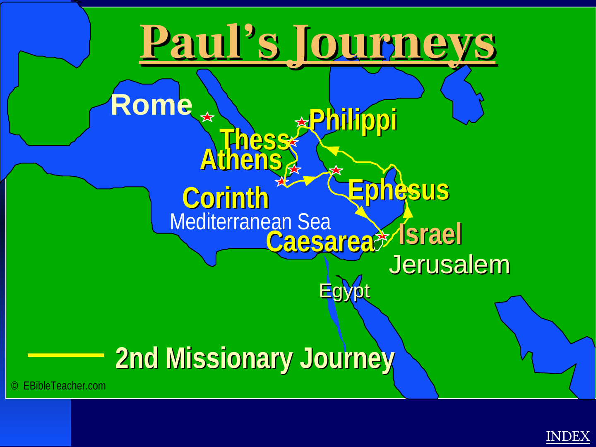

Birth & Bethlehem
The source presents Bethlehem as the birthplace of Jesus and connects it with prophecy and the infancy narratives.
The supplied atlas directly supports a childhood-geography section. This page keeps that source-supported core clear while showing how the website can grow into a fuller life-of-Jesus experience.

The source presents Bethlehem as the birthplace of Jesus and connects it with prophecy and the infancy narratives.
The source includes an early Jerusalem visit and later the Temple episode at age twelve.
The atlas places Egypt within the childhood movement associated with Matthew 2.
Nazareth is presented as the place of Jesus' upbringing in Galilee.
A production edition should add baptism, Galilean ministry, miracles, teachings, final journey to Jerusalem, Passion Week, crucifixion, resurrection, Great Commission and ascension using additional sourced material.
For the interactive step-by-step version, use the journeys area.